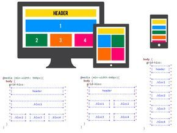
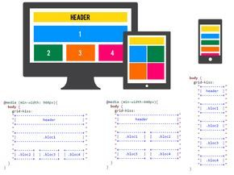

Cascading Style Sheets (CSS)
CSS (en inglés Cascading Style Sheets) es lo que se denomina lenguaje de hojas de estilo en cascada y se usa para estilizar elementos escritos en un lenguaje de marcado como HTML. CSS separa el contenido de la representación visual del sitio. CSS fue desarrollado por W3C (World Wide Web Consortium) en 1996 por una razón muy sencilla. HTML no fue diseñado para tener etiquetas que ayuden a formatear la página. Está hecho solo para escribir el marcado para el sitio.
 
